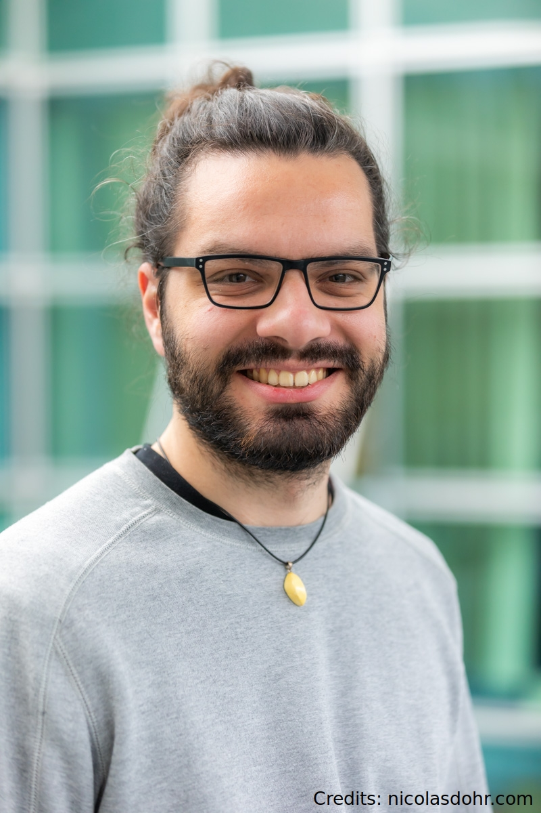

First name: Valentin Familly name: Richard Contact: valentin.richard at loria dot fr My CV
Prénom : Valentin Nom de famille : Richard Contact : valentin.richard at loria dot fr Mon CV
I'm a French PhD student in formal semantics at LORIA (Nancy, France). I'm supervised by Philippe de Groote, Reinhard Muskens and Floris Roelofsen (joint PhD with ILLC, University of Amsterdam) on the topic:
Dynamic Aspects of Questions Semantics
My PhD consists in three main axes:- Existential Inference of Wh-Questions
- Modals Interfering with Question Presuppositions
- Wh-Anaphora
Je suis doctorant en sémantique formelle au LORIA (Nancy). Je suis dirigé par Philippe de Groote, Reinhard Muskens et Floris Roelofsen (cotutelle avec l'ILLC, Université d'Amsterdam) sur le sujet :
Aspects dynamiques de la sémantique des questions
Mon doctorat consiste en trois axes principaux:- Inférence existentielle des question partielles
- Interférences modales sur les présuppositions des questions
- Anaphores avec les mots interrogatifs
Research interests
- Semantics of interrogatives
- Syntax of French questions
- French spelling reform
Intérêts de recherche
- Sémantique des interrogatives
- Syntaxe des interrogatives en français
- Réforme de l'orthographe du français
How to pronounce my name
- English equivalent "Valentin" /ˈvæləntɪn ˈritʃərd/
- French exact pronounciation [valɒ̃ˈt̪̃æ], [valɒ̃t̃æ ʁiˈʃaːʁ]